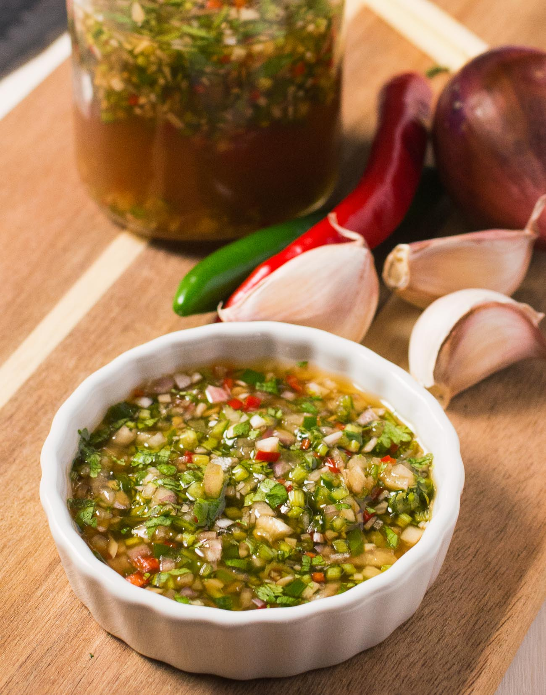

Thai Dipping Sauce

A flavourful Thai chilli lime sauce
Thai Nam Jim or Thai dipping sauce is crazy flavourful and dead easy. Garlic, shallots, lime juice and hot chilies. It’s a Thai wonder sauce.
Thai dipping sauce is great on just about everything. Maybe not ice cream but other than that. It’s called nam jim.
ingredients
- 1/4 cup fish sauce
- 1/4 cup lime juice -fresh squeezed
- 2 green chilies -seeded and minced
- 1 red chili -seeded and minced
- 1/4 cup shallots minced
- 1 large clove garlic – as finely chopped as you can
- 1/4 cup minced cilantro
- 1/4 cup brown sugar
- 1/4 cup water
Instruction
- Combine ingredients. Stir.
- Let sit for an hour or more to let the flavours combine.
See further more recipes below